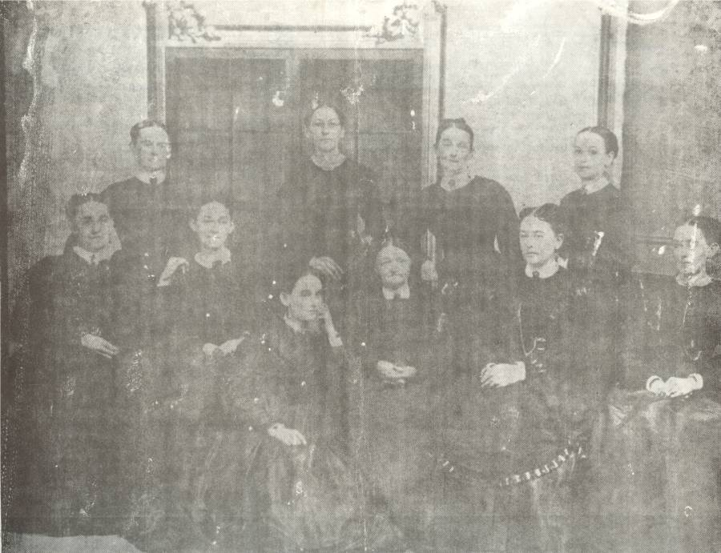

|
|
|
|
|
|

Below is a copy of an email sent to Oxford Past. Thank you,
Jane!
|
Greetings!
I saw the
picture of
Elizabeth Perkins Candee and nine of her twelve
children on the Oxford
Past page. A daughter, Mary, who died young,
and sons William
Sydney Candee (died 1865) and David P. Candee
(living in New Haven at
time of 1870 census) are not in the picture. I
have a photocopy
of the picture and can identify everyone. My
great aunt, Bessie
Candee Hitchcock Kinney, labeled it. The husbands
are in parentheses.
Kneeling on floor is Catherine Rosabelle Candee (Henry Washington Hitchcock) Seated: (from the left) Hannah Augusta Candee (Frank Hall) Mary Josephine Candee ((1)____Canfield (2) James C. Wicker) Elizabeth Perkins (Enos Candee) Jane Ann Candee (Robert E. Isbell) Esther R. Candee (Dr. Laurence Sterne Hotchkiss) Standing: (from the left) Martha Melissa Candee (J. Terry Munn) Elizabeth Candee Eunice Candee (John A. Peck) Charlotte Candee (Sereno S. Thomas) The picture had to have been taken before 1872 when Catherine died. The clothing should give help dating it but I haven't looked into that yet. Submitted by: Jane Hitchcock Platt, great granddaughter of Catherine Candee Hitchcock. Milford, CT e-mail: Jane Hitchcock Platt |
|
|
|
|
|
|